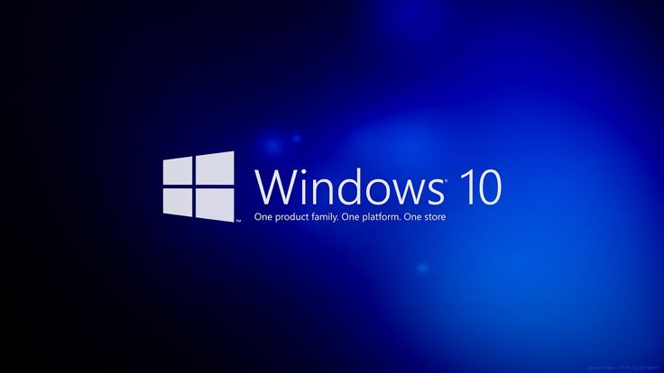

ماذا يعني حرق ويندوز على فلاشة
هذا يعني تحويل ملف ويندوز (مثل ملف ISO) إلى نسخة يمكن تشغيلها مباشرة من فلاشة USB، تمامًا كما لو كانت قرصًا مضغوطًا. بهذه الطريقة، يمكنك تثبيت ويندوز على جهاز الكمبيوتر الخاص بك أو على جهاز آخر.
لماذا نحتاج إلى فعل ذلك؟
* إعادة تثبيت ويندوز: إذا كان جهازك يعمل ببطء أو يعاني من مشاكل، فإن إعادة تثبيت ويندوز يمكن أن يحل الكثير من هذه المشاكل.
* تثبيت ويندوز على جهاز جديد: عند شراء جهاز كمبيوتر جديد، قد تحتاج إلى تثبيت ويندوز عليه.
* إنشاء نسخة احتياطية: يمكنك إنشاء نسخة احتياطية من ويندوز على الفلاشة للاستخدام في المستقبل إذا احتجت إليها.
ما هي الخطوات الأساسية؟
* تحضير الفلاشة: ستحتاج إلى فلاشة USB فارغة بسعة مناسبة.
* تنزيل البرنامج: ستحتاج إلى برنامج خاص يسمى Rufus لعملية الحرق.
* اختيار ملف ويندوز: ستحتاج إلى ملف ويندوز ISO الذي تريد تثبيته.
* تحديد نوع القرص الصلب: هناك نوعان رئيسيان هما GPT و MBR. يجب عليك اختيار النوع المناسب لجهازك.
* بدء عملية الحرق: بعد تحديد جميع الإعدادات، تبدأ عملية نسخ ملفات ويندوز إلى الفلاشة.
* تثبيت ويندوز: بعد الانتهاء من الحرق، تقوم بتشغيل جهاز الكمبيوتر من الفلاشة وتبدأ عملية تثبيت ويندوز.
بعض النقاط الهامة التي يجب تذكرها:
* النسخة الاحتياطية: قبل البدء، تأكدي من عمل نسخة احتياطية لملفاتك المهمة لأن عملية الحرق ستمسح جميع البيانات الموجودة على الفلاشة.
* نوع القرص الصلب: اختيار نوع القرص الصلب المناسب مهم جدًا لنجاح عملية التثبيت.
* إعدادات BIOS: بعد الانتهاء من عملية الحرق، قد تحتاج إلى تغيير بعض الإعدادات في BIOS لجهاز الكمبيوتر حتى يتمكن من التشغيل من الفلاشة.
نصيحة: إذا كنتِ مبتدئة، فمن الأفضل طلب المساعدة من شخص لديه خبرة في هذا المجال لتجنب أي أخطاء.
هل لديك أي أسئلة أخرى حول هذه العملية؟
يرجى البحث عن برنامج Rufus وملف ويندوز ISO المناسب لجهازك من مصادر موثوقة على الإنترنت.

* وسيلة تثبيت: يمكن أن تكون قرصًا مضغوطًا (CD) أو قرصًا فلاش (USB).
* نسخة أصلية من ويندوز 10: تأكد من حصولك على نسخة أصلية لتجنب المشاكل.
* نسخة احتياطية من بياناتك المهمة: قبل البدء، احرص على عمل نسخة احتياطية لملفاتك المهمة مثل الصور والمستندات على قرص صلب خارجي أو في خدمة تخزين سحابية.
خطوات التثبيت:
* إعداد وسيلة التثبيت:
* إذا كان لديك قرص مضغوط، أدخله في الكمبيوتر.
* إذا كان لديك قرص فلاش، قم بتوصيله بالكمبيوتر.
* إعادة تشغيل الكمبيوتر:
* قم بإعادة تشغيل الكمبيوتر.
* أثناء عملية الإعادة التشغيل، اضغط على المفتاح المحدد لفتح قائمة التمهيد (عادةً F12 أو Esc). هذا المفتاح يختلف من جهاز لآخر، لذا قد تحتاج إلى البحث عن دليل جهازك.
* اختيار وسيلة التثبيت:
* من قائمة التمهيد، اختر وسيلة التثبيت التي قمت بإعدادها (القرص المضغوط أو الفلاش).
* متابعة عملية التثبيت:
* ستظهر لك شاشة تثبيت ويندوز. اتبع التعليمات التي ستظهر على الشاشة.
* سيطلب منك اختيار اللغة والوقت وتنسيق العملة ولوحة المفاتيح.
* بعد ذلك، ستظهر لك شاشة "تثبيت الآن". انقر عليها.
* اختيار نوع التثبيت:
* يمكنك اختيار بين الترقية أو التثبيت المخصص.
* الترقية: يحفظ معظم إعداداتك وبرامجك الحالية.
* التثبيت المخصص: يمسح القرص ويقوم بتثبيت ويندوز من البداية.
* تحديد القرص:
* اختر القرص الذي تريد تثبيت ويندوز عليه. انتبه جيدًا لأن هذا سيؤدي إلى مسح جميع البيانات الموجودة على هذا القرص.
* انتظار اكتمال التثبيت:
* سيستغرق التثبيت بعض الوقت. خلال هذه الفترة، لا تقم بإيقاف تشغيل الكمبيوتر.
* إعدادات الحساب:
* بعد اكتمال التثبيت، ستحتاج إلى إنشاء حساب مايكروسوفت أو حساب محلي.
* تثبيت التحديثات:
* بعد إنشاء الحساب، سيقوم ويندوز بتثبيت التحديثات تلقائيًا.
نصائح إضافية:
* اتصال بالإنترنت: يفضل أن يكون لديك اتصال بالإنترنت أثناء عملية التثبيت لتسهيل تنزيل التحديثات وبرامج التشغيل.
* برامج التشغيل: بعد الانتهاء من التثبيت، قد تحتاج إلى تثبيت برامج التشغيل الخاصة بأجهزة الكمبيوتر الخاصة بك مثل بطاقة الصوت والطابعة. يمكنك تنزيل هذه البرامج من موقع الشركة المصنعة للجهاز.
ملاحظة: هذه خطوات عامة. قد تختلف بعض التفاصيل قليلاً حسب إصدار ويندوز 10 وجهاز الكمبيوتر الخاص بك. إذا واجهت أي مشاكل، يمكنك البحث عن دليل المستخدم الخاص بجهازك أو طلب المساعدة من متخصص
ويمكنك تحميله من الروابط التاليه